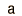

Poisson Distribution Example
| Distribution | Functional Form | Mean | Standard Deviation |
| Poisson |  |  |
If the probability p is so small that the function has significant value only for very small x, then the distribution of events can be approximated by the Poisson distribution. Under these conditions it is a reasonable approximation of the exact binomial distribution of events.
In the calculation of the distribution function, the values for the mean and standard deviation are carried over from the binomial distribution. Under the conditions where the Poisson distribution is applicable, the standard deviation may be approximated by the square root of the mean.
The Poisson distribution may be used in the design of experiments such as scattering experiments where a small number of events are seen. For example, if an average value for a standard experimental run is known, then predictions can be made about the yield of future runs.
Suppose you made three runs at the accelerator trying to detect a rare particle. The first run yielded 1, the second 5 and the third 3.
a. How many runs would you have to make to get 100 of them?
b. How many runs to get at least 5 at 90% confidence?
a. Since the mean number of events is 3, you expect to see 100 events in 100/3 or 34 runs. This is a reasonable projection, but it doesn't address confidence levels.
b. You would expect that two runs would be sufficient to see 5 events, since the average number is 3. But Poisson statistics allow us to project confidence levels. This calculation is approached in a somewhat backwards manner by calculating the probability that you will see 0, 1, 2, etc., and then subtracting those probabilities from 1 to get the probability of seeing more than that number. By exploring the calculation below, you can gather the numbers for the following table:
| Number of events x | Probability for seeing x | Probability for events <= x | Probability for events >x |
The probability of getting at least 5 events in two runs could be assessed as the probability of getting at least 3 in one run (.5768) times the probability of getting at least 2 in the other (.8008) which would give only .46 or 46% confidence for two runs. For three runs the probability increases to (.8008)(.8008)(.9502) = 61%. For four runs 69%, five runs 77%.
Distribution functions
Applied statistics concepts
| HyperPhysics*****HyperMath*****Algebra | R Nave |